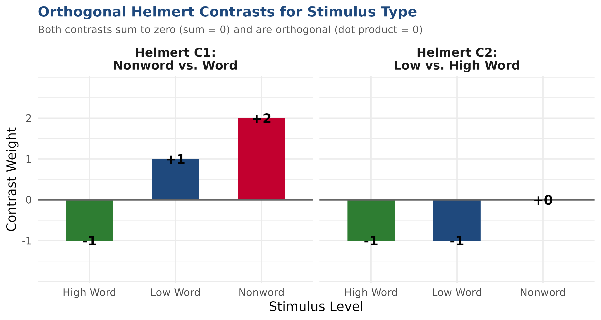

| Parameter | Estimate | EstError | 95% CrI | Rhat | Bulk_ESS | Interpretation |
|---|---|---|---|---|---|---|
| Intercept (Grand Mean Drift) | 0.793 | 0.031 | [0.73, 0.85] | 1.00 | 1798 | Unweighted mean drift (positive due to 2:1 category imbalance) |
| Boundary Separation (Intercept) | 1.112 | 0.008 | [1.10, 1.13] | 1.00 | 3382 | Baseline boundary: softplus(1.11) ≈ 1.40 evidence units |
| Starting Point Bias (Intercept) | 0.025 | 0.009 | [0.01, 0.04] | 1.00 | 3569 | Starting bias: plogis(0.025) ≈ 0.506 (nearly unbiased) |
| Non-Decision Time (Intercept) | -1.102 | 0.002 | [-1.11, -1.10] | 1.00 | 3270 | Baseline NDT: exp(-1.10) ≈ 332 ms latency |
| stimulus_type: Nonword vs Word | -1.439 | 0.012 | [-1.46, -1.42] | 1.00 | 2565 | Lexical discrimination: Nonwords drift down (-), Words up (+) |
| stimulus_type: Low vs High Word | -0.678 | 0.024 | [-0.73, -0.63] | 1.00 | 2779 | Frequency effect: Low-frequency slower uptake than high |
| Condition: Acc vs Speed | 0.091 | 0.014 | [0.06, 0.12] | 1.00 | 2799 | Slight overall drift modulation across instructions |
| Nonword_vs_Word : Acc_vs_Speed | -0.043 | 0.010 | [-0.06, -0.02] | 1.00 | 2858 | Modulation of lexical discrimination by speed/acc |
| Low_vs_High : Acc_vs_Speed | 0.063 | 0.020 | [0.02, 0.10] | 1.00 | 3586 | Modulation of frequency sensitivity by speed/acc |
| Boundary Separation: Acc vs Speed | 0.426 | 0.008 | [0.41, 0.44] | 1.00 | 4765 | Accuracy widens boundaries: a_Acc (1.73) > a_Spd (1.09)! |
| Non-Decision Time: Acc vs Speed | 0.026 | 0.002 | [0.02, 0.03] | 1.00 | 2972 | NDT difference between conditions is tiny (~17 ms) |
Drift Diffusion Modeling in R with brms & cogmod
It can be done!
Dr. Bernhard Angele
Tuesday, September 8, 2026
Context within the DDM Workshop
Module: Technical Issues in brms & How cogmod Works
From Mathematical Theory to Computational Reality
- Earlier sessions cover the conceptual and mathematical foundations of evidence accumulation (Wiener diffusion equations, boundary hitting times, speed-accuracy tradeoffs).
- Our Focus in this Module:
- The computational hurdles of fitting hierarchical DDMs with Hamiltonian Monte Carlo (HMC) in Stan/
brms. - How
cogmodresolves the infamous numerical pathologies of native Stan. - Specific design considerations for our stimulus-coded model (
fit_ddm_stimulus_coding.R). - Orthogonal contrast engineering, multithreading, and sampler diagnostics.
- The computational hurdles of fitting hierarchical DDMs with Hamiltonian Monte Carlo (HMC) in Stan/
Workshop Module Agenda
1. Technical Hurdles in brms
- Native Stan limitations (
wiener_lpdf) - The NaN partial gradient disaster
- The hard minimum-RT cliff & crashes
- Crossed random effects complexity
2. How cogmod Works Under the Hood
- Custom family architecture (
cogmod_ddm) - Link functions: Why
softplusfor boundary? - The 0.2s half-normal outlier mixture
- The triad:
priors,inits, andstanvars
3. Considerations for Our Model
- Response coding vs. Error coding
- Data censoring (
speed_acc$censor) - Collapsing stimulus levels (low + very low)
- Empirical 50/50 response balance
4. Contrasts & Interpretation
- Orthogonal Helmert contrasts
- Sum-to-zero instruction contrasts
- Deconstructing the drift rate intercept
5. High-Performance Sampling
- Within-chain multi-threading (
threading(2)) - Diagnosing & preventing divergences
Part 1: Technical Hurdles of DDM in brms
The High Dimensionality of Cognitive Models
- In psychological and psycholinguistic experiments (e.g., lexical decision), we have crossed random effects: \[\text{Drift Rate } \mu_{ij} = \beta_0 + \beta_1 X_{ij} + u_i + w_j, \quad u_i \sim \text{Normal}(0, \sigma_{\text{Participant}}^2), \quad w_j \sim \text{Normal}(0, \sigma_{\text{Item}}^2)\]
- Unlike nested clinical trials, every participant responds to hundreds of unique items.
- In Wagenmakers et al. (2008), this means estimating:
- 4 core cognitive parameters (\(\mu, a, t_0, z\)) across condition cells.
- Crossed random intercepts across \(3\) participants and \(>3,000\) items.
- Over \(3,000\) latent parameters estimated simultaneously!
- Fitting this via Hamiltonian Monte Carlo requires an exceptionally stable posterior geometry.
Native Stan & brms::wiener() Limitations
Standard brms includes the wiener() family (Bürkner, 2017; Singmann, 2017), but fitting hierarchical models often hits severe technical roadblocks:
1. The NaN Gradient Disaster
- Stan’s
wiener_lpdf()evaluates alternating infinite series (Navarro & Fuss, 2009). - When density underflows to 0, it returns
-infwith NaN partial derivatives! - In reverse-mode automatic differentiation: \[0 \times \text{NaN} = \text{NaN}\]
- A single trial with a NaN partial turns the entire model gradient to NaN!
- Leads to “Non-finite gradient” aborts and false divergent transitions.
2. The Hard Min-RT Cliff
- The Wiener process is undefined for \(RT \le t_0\).
- If a single trial has \(RT \le t_0\), density drops to 0 instantly as an infinite vertical cliff.
- Stan cannot calculate gradients across discontinuities.
- Warmup chains get trapped or fail during initialization: “Rejecting initial value: Log probability evaluates to log(0)”
- Forces brittle manual bounds (\(t_0 < \min(RT)\)).
Units Matter: Seconds vs. Milliseconds!
- In standard linear regression, whether RT is in milliseconds (\(500\) ms) or seconds (\(0.50\) s) only scales the slope by \(1000\).
- In Drift Diffusion Modeling, units are fundamental:
- Diffusion variance \(s^2\) is fixed to \(1\) (or \(0.1\)) as an arbitrary scaling constant.
- All four parameters (\(\mu, a, t_0, z\)) scale nonlinearly with time units: \[a \propto \sqrt{\text{time}}, \quad \mu \propto \frac{1}{\sqrt{\text{time}}}, \quad t_0 \propto \text{time}\]
- Stan’s numerical precision and internal approximations are calibrated for SECONDS.
- If you pass reaction times in milliseconds (\(500\) instead of \(0.5\)), Stan’s exponential and Bessel approximations overflow/underflow immediately!
- Golden Rule: Always verify that \(RT\) is in seconds (\(0.18 \le RT \le 3.0\)) before fitting!
Part 2: How cogmod Works Under the Hood
What is cogmod? (Makowski, 2025)
- Developed by Dominique Makowski (2025).
- Designed specifically to bridge cognitive science models with modern Bayesian computation in
brmsand Stan. - Provides
cogmod_ddm(): a custombrmsdistributional family (custom_family). - Parameterizes the decision process:
mu: Drift rate (accumulation slope)boundary: Boundary separation (\(a > 0\))ndt: Non-decision time (\(t_0 > 0\))bias: Relative starting point (\(z/a \in (0, 1)\))sigmadrift,sigmabias,sigmandt: Trial-to-trial variabilities (7-parameter Ratcliff DDM)poutlier: Proportion of lapse trials
Core Advantages of cogmod:
✅ Safe Likelihood: Dual Navarro & Fuss approximations prevent NaN gradients.
✅ Outlier Mixture: Eliminates the hard minimum-RT cliff.
✅ Stable Link Functions: Uses softplus for boundary separation.
✅ Automated Workflows: Built-in priors, smart initializations, and Stan code injection.
Parameter Link Functions in cogmod
In distributional regression, parameters are modeled on unbounded latent scales via link functions:
| Parameter | Link Function | Mathematical Form | Rationale |
|---|---|---|---|
| Drift Rate (\(\mu\)) | identity |
\(\mu = \eta\) | Can take any real value (\(-\infty, +\infty\)) |
| Boundary (\(a\)) | softplus |
\(a = \log(1 + e^{\eta})\) | Smooth positive gradient! (Avoids log explosions) |
| Non-decision (\(t_0\)) | log |
\(t_0 = e^{\eta}\) | Strictly positive latency (\(t_0 > 0\)) |
| Bias (\(z/a\)) | logit |
\(z = \frac{1}{1 + e^{-\eta}}\) | Strictly bounded within \((0, 1)\) (\(0.5 = \text{unbiased}\)) |
💡 Why softplus for Boundary instead of log?
A log link models \(a = \exp(\eta)\). If predictors yield \(\eta > 3\), boundary separation explodes exponentially, collapsing the likelihood. The softplus function behaves linearly for positive values (\(\approx \eta\)) and smoothly approaches zero for negative values, providing robust HMC gradients!
The Outlier Mixture Mechanism
- How cogmod eliminates the min-RT cliff:
- Blends the Wiener density with a half-normal outlier lapse process (scale = \(0.2\) s) with equal choice probability: \[p(\text{choice}, RT) = (1 - p_{\text{out}}) f_{\text{Wiener}} + p_{\text{out}} f_{\text{Lapse}}\]
- If \(RT \le t_0\):
- Standard Wiener crashes to \(-\infty\) with NaN partials.
cogmodsmoothly assigns: \[\log(p_{\text{outlier}}) + lp_{\text{outlier}}\]
- The parameter \(t_0\) can now be estimated via smooth gradients without hitting an impenetrable cliff!

The Triad of Automation Helpers
cogmod provides three dedicated functions that work in concert with brms:
# 1. Automatic data-driven priors matched to parameter link scales
prior_ddm <- cogmod_priors(f_ddm, df)
# 2. Smart initialization function avoiding boundary rejection
init_ddm <- cogmod_inits(f_ddm, df)
# 3. Stan C++ code injection for the custom likelihood functions
sv_ddm <- cogmod_stanvars(f_ddm)cogmod_priors()
Generates weakly informative priors scaled specifically for seconds and link functions (e.g. Normal priors on logit bias, softplus boundary).
cogmod_inits()
Calculates empirical RT minima and provides jittered starting values ensuring \(t_0 < \min(RT)\) for every chain. Eliminates initialization crashes!
cogmod_stanvars()
Injects custom C++ Stan code (cogmod_ddm_lpdf, dual Navarro & Fuss series) directly into Stan’s functions {} block.
Part 3: Considerations for THIS Particular Model
workshop_sepex/fit_ddm_stimulus_coding.R
Response Coding vs. Error Coding
A foundational decision in DDM specification is how boundaries are mapped to behavior:
Accuracy / Error Coding
- Lower (0): Correct response
- Upper (1): Error response
- Fatal Flaw in Lexical Decision:
- Accuracy is typically ~95%.
- 95% of data hits boundary 0; only 5% hits boundary 1.
- Severe data sparsity prevents reliable estimation of boundary \(a\) and non-decision time \(t_0\).
- Erases physical motor key distinctions.
Response / Stimulus Coding
- Lower (0): “Nonword” key press
- Upper (1): “Word” key press
- Methodological Strengths:
- Balanced boundaries: ~50/50 distribution of observations (\(47\%\) word, \(53\%\) nonword).
- Both boundaries have thousands of empirical RTs.
- Direct motor mapping: Starting point bias (\(z > 0.5\)) measures true preference toward “Word”.
- Directional drift: \(v > 0\) for words, \(v < 0\) for nonwords!
Data Censoring via speed_acc$censor
- We fit Experiment 1 of Wagenmakers et al. (2008), provided in
rtdists::speed_acc(Heathcote & Love, 2012; Singmann, 2017). - Why we filter
!speed_acc$censor:- Wagenmakers et al. and Heathcote & Love (2012) flagged \(171\) trials (\(0.5\%\)) for exclusion:
- Accidental button presses: Keys pressed outside the designated response set.
- Fast anticipations (\(RT < 180\) ms): Responses faster than physiological visual-motor transmission time.
- Attentional lapses (\(RT > 3.0\) s): Trials with mind-wandering or external disruption.
- Technical impact on brms:
- Extreme anticipations artificially compress the estimate of \(t_0\).
- Long lapses artificially inflate boundary separation \(a\).
- Filtering
!censoryields \(4,632\) clean observations for participants 1–3.
- Wagenmakers et al. and Heathcote & Love (2012) flagged \(171\) trials (\(0.5\%\)) for exclusion:
Collapsing Stimulus Types
In the original Wagenmakers et al. (2008) dataset, stimuli are divided into 4 categories: - nonword, very_low, low, and high frequency.
The Collapsing Strategy
- Words with
very_lowandlowfrequency exhibit near-identical lexical access latencies. - Estimating separate parameters for both fragments statistical power without theoretical benefit.
- We collapse them into a single level:
low.
Resulting Parsimonious Factor
nonword(\(N = 2,311\) trials)- Pseudoword items requiring negative drift.
low(\(N = 1,547\) trials)- Combined low & very low frequency words.
high(\(N = 774\) trials)- High frequency, easily recognized words.
Empirical Distributions: Clean 50/50 Split

Part 4: Contrast Design & Intercept Mechanics
The Trap of Default Treatment Coding
- By default, R and
brmsuse dummy / treatment coding (contr.treatment). - It designates one factor level as the baseline (e.g. High Frequency Words under Accuracy).
- Why this fails in multi-parameter DDM:
- The drift rate intercept \(\beta_0\) becomes the drift rate of high-frequency words in accuracy conditions.
- Main effects represent differences from that specific condition, not average marginal effects.
- Testing whether drift rate differs between words and nonwords requires awkward linear combinations (
hypothesis()).
- Solution: Planned Orthogonal Helmert Contrasts and Sum Contrasts (Schad et al., 2020).
Orthogonal Helmert Contrasts for stimulus_type
We structure two planned, orthogonal hypotheses:
| Stimulus Level | Nonword_vs_Word |
Low_vs_High |
|---|---|---|
| High Word | \(-1\) | \(-1\) |
| Low Word | \(-1\) | \(+1\) |
| Nonword | \(+2\) | \(0\) |
- \(\sum C_1 = 0\), \(\sum C_2 = 0\) (centered).
- Dot product: \((-1)(-1) + (-1)(1) + (2)(0) = 0\) (orthogonal!).

Sum Contrasts for Condition
For speed vs. accuracy instructions, we apply Sum-to-Zero contrasts (contr.sum):
| Instruction Condition | Acc_vs_Speed |
|---|---|
| Accuracy | \(+1\) |
| Speed | \(-1\) |
- Properties:
- Column sums to zero: \((+1) + (-1) = 0\).
- Intercept reflects the unweighted grand mean across instructions.
- Predictor tests the average directional difference between Accuracy and Speed blocks.
Interpretability: Meaning of the Drift Intercept
Because all contrast columns sum to zero across factor levels, the intercept \(\beta_0\) is evaluated where all predictors equal zero: \[\beta_0 = \frac{1}{3}\mu_{\text{high}} + \frac{1}{3}\mu_{\text{low}} + \frac{1}{3}\mu_{\text{nonword}}\]
1. Directional Cancellation & Imbalance
- Words pull positive (\(\mu_{\text{word}} > 0\)). Nonwords pull negative (\(\mu_{\text{nonword}} < 0\)). They pull in opposite directions and partially cancel out!
- There are 2 word categories and 1 nonword category: \[\beta_0 = \frac{2}{3}\bar{\mu}_{\text{word}} + \frac{1}{3}\mu_{\text{nonword}}\]
- Even if words and nonwords are equally easy (\(|\bar{\mu}_{\text{w}}| = |\mu_{\text{nw}}|\)), \(\beta_0\) is naturally positive!
2. Where Does Discrimination Live?
- Under stimulus coding, overall discrimination ability lives in Helmert Contrast 1 (
Nonword_vs_Word): \[\mu_{\text{nonword}} - \bar{\mu}_{\text{word}}\] - Because words are positive and nonwords are negative, this contrast strongly captures the ability to separate words from nonwords!
- Lexical sensitivity lives in Helmert Contrast 2 (
Low_vs_High).
Part 5: Model Specification & Multi-Threading
Running brms with cmdstanr
The Stimulus-Coded DDM Formula
In workshop_sepex/fit_ddm_stimulus_coding.R, we specify the full distributional formula:
f_ddm <- bf(
# 1. Drift Rate (mu): stimulus_type * Condition + crossed random intercepts
rt | dec(response_choice) ~ stimulus_type * Condition + (1 | Participant) + (1 | Item),
# 2. Boundary Separation (a): modulated by speed-accuracy instructions
boundary ~ Condition,
# 3. Non-Decision Time (t0): sensory-motor latency across conditions
ndt ~ Condition,
# 4. Starting Point Bias (z): bias toward "Word" (1) vs "Nonword" (0)
bias ~ 1,
# Baseline 4-parameter DDM (trial-to-trial variabilities fixed to 0)
sigmadrift = 0, sigmabias = 0, sigmandt = 0,
family = cogmod_ddm()
)High-Performance Multi-Threading in Stan
- Fitting \(>3,000\) item intercepts across \(4,632\) observations takes significant compute time.
- Solution: Within-chain multi-threading in Stan via
reduce_sum:
🚀 How it works: Stan parallelizes likelihood evaluations across 2 threads within each chain. With 4 chains running simultaneously on 4 cores, all 8 CPU cores are pinned at 100%, cutting wall-clock execution time in half!
MCMC Diagnostics: Preventing Divergences
- What is a divergent transition?
- A point where the simulated Hamiltonian trajectory deviates from the true energy surface.
- Indicates that the step size \(\epsilon\) is too large to navigate high-curvature regions.
- Neal’s Funnel in Hierarchical DDMs:
- Estimating participant-level standard deviations (\(\sigma_{\text{Participant}}\)) with only \(N=3\) participants creates a classic “funnel” geometry.
- In our initial tests with default
adapt_delta = 0.80, 36 divergences clustered in the funnel neck ofsd_Participant__Intercept.
- The Solution in
fit_ddm_stimulus_coding.R:adapt_delta = 0.95: Forces Stan to take smaller leapfrog steps, resolving the narrow neck.max_treedepth = 12: Prevents premature termination of trajectory exploration in complex surfaces.
Model Results: Full Hierarchical DDM (N = 17)
✅ Production Model Completed: The full hierarchical stimulus-coded DDM finished sampling in 157.2 minutes (~2.6 hours) across 4 chains (1,000 iter, 500 warmup = 2,000 post-warmup draws) with multi-threading (threads = threading(2)).
MCMC Diagnostic Health
- Divergent Transitions: 0 (0.0%) across all 2,000 draws!
adapt_delta = 0.95eliminated divergences.
- Rhat = 1.00 across every parameter.
- Bulk ESS: 1,798 to 4,765 (far above the 400 guideline).
- Tail ESS: 1,127 to 1,898.
Modeling Scope
- 31,351 observations (all 17 subjects, censored).
- 4,780 crossed item intercepts estimated simultaneously.
- 17 participant intercepts estimated simultaneously.
- Model serialized safely to:
models/ddm_cogmod_stimulus_coding_model.qs
Posterior Parameter Estimates (Full Production Model)
Posterior Boundary Separation: Accuracy vs. Speed
Robust Shift in Decision Caution
- Accuracy Instructions:
- \(\text{softplus}(1.112 + 0.426) \approx \mathbf{1.73}\) evidence units.
- Speed Instructions:
- \(\text{softplus}(1.112 - 0.426) \approx \mathbf{1.09}\) evidence units.
- Cognitive Finding:
- Boundaries are \(58\%\) wider under accuracy instructions.
- Participants trade speed for accuracy by adjusting the threshold distance (\(a\)).

Posterior Drift Rates & Hypotheses Confirmation
Decomposition of Evidence Accumulation
- Drift Intercept (\(\beta_0 = +0.79\)):
- Positive as mathematically derived (\(\frac{2}{3}\bar{\mu}_{\text{word}} + \frac{1}{3}\mu_{\text{nonword}}\)).
- Helmert C1 (
Nonword_vs_Word= \(-1.44\)):- Massively negative: Nonwords accumulate evidence toward 0, words toward 1!
- Helmert C2 (
Low_vs_High Word= \(-0.68\)):- Low-frequency words have lower accumulation slopes than high-frequency words.

Latency & Crossed Random Effects
Non-Decision Latency (\(t_0\))
- Baseline NDT: \(332\) ms (\(95\%\) CrI: \([331, 334]\) ms).
- Speed vs. Accuracy: Only a \(17\) ms shift (\(341\) ms in Accuracy vs. \(324\) ms in Speed).
- Bias (\(z\)): \(0.506\) (\(50.6\%\), essentially unbiased).
Crossed Variances
- Item SD (\(\sigma_{\text{Item}} = 0.69\)): Substantial lexical diversity across words and nonwords.
- Participant SD (\(\sigma_{\text{Participant}} = 0.09\)): Consistent performance across participants.

Part 6: Reproducibility & Workflow Architecture
Separation of Concerns in Quarto & Docker
❌ Anti-Pattern: MCMC in Quarto
- Running
brm()calls directly inside.qmdcode chunks. - Every minor typo or slide reformat triggers hours of re-compilation.
- Rendering timeouts and container memory exhaustion.
✅ Best Practice: Standalone Execution
- Standalone R script (
fit_ddm_stimulus_coding.R) executes in Docker. - Models are serialized to disk using
qs2::qs_save(). - Presentation only loads pre-computed summaries via
qs2::qs_read(). - Slide compilation is instant (< 5 seconds)!
🔒 Serialization Protocol: Always use qs2 (fast, stable C++ serialization). Never use the deprecated qs package!
Managing Large Model Objects in Git
- Fitted hierarchical Bayesian models in
brmswith thousands of random effect draws exceed 50–300 MB. - Committing raw
.qsfiles exceeds GitHub’s 100 MB file limit and bloats repository history. - The Project’s File Splitting Utility (
file_manager.py):Splitting:
Creates a SHA-256
.hashfile and split.part00Xchunks (< 90 MB) for safe Git commits.Rebuilding:
Reassembles all split chunks into full
.qsobjects upon container startup!
Summary: Technical Checklist for DDM in brms
1. Choice Coding: Use Response Coding (\(0 = \text{Nonword}, 1 = \text{Word}\)) for balanced boundaries and meaningful drift signs.
2. Data Preparation: Filter extreme anticipations and lapses; ensure RT is strictly in seconds.
3. cogmod Ecosystem: Leverage cogmod_ddm() with softplus boundaries, cogmod_priors(), cogmod_inits(), and cogmod_stanvars().
4. Contrast Engineering: Apply orthogonal Helmert contrasts to factor levels and sum contrasts to conditions for interpretable intercepts.
5. Parallelization: Use backend = “cmdstanr” and threads = threading(2) to maximize multicore throughput.
6. Sampler Tuning: Increase adapt_delta = 0.95 and max_treedepth = 12 to eliminate Neal’s Funnel divergences.
References
Bürkner, P.-C. (2017). Brms: An r package for bayesian multilevel models using stan. Journal of Statistical Software, 80(1), 1–28. https://doi.org/10.18637/jss.v080.i01
Heathcote, A., & Love, B. C. (2012). Linear ballistic accumulation technology. Frontiers in Psychology, 3, 292. https://doi.org/10.3389/fpsyg.2012.00292
Makowski, D. (2025). Cogmod: Cognitive modeling in R with stan and brms. https://dominiquemakowski.github.io/cogmod/.
Schad, D. J., Vasishth, S., Hohenstein, S., & Kliegl, R. (2020). How to capitalize on a priori contrasts in linear (mixed) models: A tutorial. Journal of Memory and Language, 110, 104038. https://doi.org/10.1016/j.jml.2019.104038
Singmann, H. (2017). Diffusion/Wiener model analysis with brms – Part I: Introduction and estimation. Computational Psychology blog. http://singmann.org/wiener-model-analysis-with-brms-part-i/.